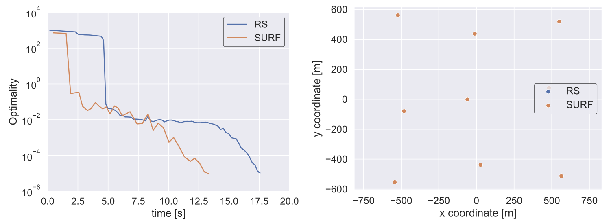

We apply gradient-based optimization to wind-farm layouts to increase annual energy production. Turbine locations alter coupled wake losses, making this application a test of how the treatment of implicit flow equations affects optimization cost.
Reducing analysis effort during optimization
In the nine-turbine comparison, a SURF variant reaches the same optimized layout and optimality tolerance about 25% faster than the reduced-space method. The result isolates a computational benefit of changing how analysis and optimization are coordinated; it does not imply that SURF always finds the same local optimum in this multimodal problem.
Paper: Joshy et al. [1]


Optimization problem
| Formulation element | Nine-turbine wind-farm layout |
|---|---|
| Case | Nine-turbine wind-farm layout |
| Objective | Maximize annual energy production (AEP). |
| Design variables | |
| x coordinates for nine turbine locations | 9 |
| y coordinates for nine turbine locations | 9 |
| Total design variables | 18 |
| Constraints | |
| Pairwise spacing at least 1.8 rotor diameters (9 choose 2) | 36 |
| Site-boundary feasibility for nine turbine locations | 9 |
| Total constraints | 45 |
| Constraint count note | Total is calculated from the nine-turbine formulation in Equation 25: 36 pairwise spacing constraints and 9 boundary constraints. |
| Models and conditions | NREL 5 MW turbines; 16 wind-direction bins at 9.8 m/s; wake and turbulence models with implicit effective wind speeds and root-sum-square wake superposition. |
| Representative source | An SQP algorithm based on a hybrid architecture for accelerating optimization of large-scale systems |
| Source locator | Section V.B, equation 25, and Figure 6, pages 12–13. |
References
- Anugrah Jo Joshy, Ryan Dunn, Mark Sperry, Victor E. Gandarillas, John T. Hwang. An SQP algorithm based on a hybrid architecture for accelerating optimization of large-scale systems. AIAA AVIATION 2023 Forum, 2023.DOIPDF
@inproceedings{joshy2023sqp, author = {Anugrah Jo Joshy and Ryan Dunn and Mark Sperry and Victor E. Gandarillas and John T. Hwang}, title = {An SQP algorithm based on a hybrid architecture for accelerating optimization of large-scale systems}, booktitle = {AIAA AVIATION 2023 Forum}, year = {2023}, doi = {10.2514/6.2023-4263}, url = {https://doi.org/10.2514/6.2023-4263}, note = {Metadata verification: Crossref title} }
Research connections